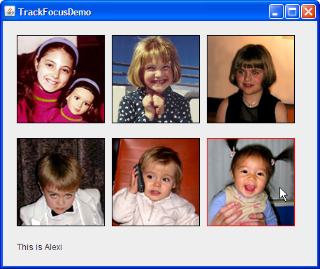

Lección: Usando Otras Características de Swing
Cómo Usar el Subsistema de Foco
Muchos componentes ─ incluso aquellos primariamente operados con el ratón, tales como los botones ─ pueden ser operados con el teclado. Para que presionar una tecla afecte a un componente, el componente debe tener el foco del teclado.
Desde el punto de vista del usuario, el componente con el foco del teclado es generalmente representado de forma prominente ─ con un borde punteado o negro, por ejemplo. La ventana que contiene el componente es también más prominente que otras ventanas en la pantalla. Estas señales visuales le permiten al usuario saber a qué componente se relacionará cualquier tecleo. Sólo un componente a la vez en la ventana del sistema puede tener el foco del teclado.
Cómo gana una ventana exactamente el foco depende del sistema de ventanas. No hay una forma infalible, a través
de todas las plataformas, para asegurar que una ventana gane el foco. En algunos sistemas operativos, tales como
Microsoft Windows, la ventana principal regularmente se convierte en la ventana con el foco. En estos casos, el
método
Window.toFront
mueve la ventana al frente, dándole así el foco, sin embargo, en otros sistemas operativos, tales como el
Sistema Operativo Solaris ™, el gestor de ventanas puede elegir la ventana enfocada basándose en la
posición del cursor, y en estos casos el comportamiento del método Window.toFront es diferente.
Un componente generalmente gana el foco cuando el usuario pulsa sobre él, O cuando las tabulaciones del usuario entre componentes, o de otra forma interactúa con un componente. A un componente puede también dársele el foco programáticamente, tal como cuando contiene un marco o un cuadro de diálogo se hace visible. Este trozo de código muestra cómo dar el foco a un componente particular cada vez que la ventana gane el foco:
//Haz que el campo de texto obtenga el foco cada vez que sea activa el marco.
frame.addWindowFocusListener(new WindowAdapter() {
public void windowGainedFocus(WindowEvent e) {
textField.requestFocusInWindow();
}
});
Si quiere asegurarse de que un componente particular gane el foco la primera vez que una ventana es activada,
puede llamar al método
requestFocusInWindow sobre el componente después de que el componente se haya realizado,
pero antes de que el marco se visualize. El código de ejemplo siguiente muestra cómo esta operación puede
ser hecha:
//...Donde ocurre la inicialización...
JFrame frame = new JFrame("Test");
JPanel panel = new JPanel(new BorderLayout());
//...Crea una variedad de componentes aquí...
//Crea el componente que tendrá el foco inicial.
JButton button = new JButton("Soy el primero");
panel.add(button);
frame.getContentPane().add(panel); //Lo añade al panel
frame.pack(); //Construye los componentes.
//Este botón tendrá el foco inicial.
button.requestFocusInWindow();
frame.setVisible(true); //Visualiza la ventana.
Alternativamente, puede aplicar un FocusTraversalPolicy personalizado al marco y llamar al método
getDefaultComponent para determinar qué componente ganará el foco.
El resto de esta sección cubre los siguientes temas:
- Introducción al Subsistema de Foco
- Validar la Entrada
- Hacer un Componente Personalizado Enfocable
- Personalización del Foco Transversal
- Seguimiento de los Cambios de Enfoque a Varios Componentes
- Transferencias del Enfoque en el Tiempo
- La IPA del Enfoque
- Ejemplos de Enfoque
Introducción al Subsistema de Foco
El subsistema de foco está diseñado para hacer lo correcto de la manera más invisible posible. En la mayoría de los casos, se comporta de manera razonable, y si no puede modificar su comportamiento de varias maneras. Algunos escenarios comunes podrían incluir:
-
El orden es correcto pero el primer componente con el foco no está establecido. Como se muestra en un trozo
de código en la sección precedente, puede usar el método
requestFocusInWindowpara establecer el foco en un componente cuando la ventana se vuelve visible. - El orden está equivocado. Para arreglar este problema, puede cambiar la jerarquía de contención, puede cambiar el orden en el que los componentes son añadidos a sus contenedores, o puede crear una política personalizada de recorrido transversal. Para más detalles vea Personalización del Foco Transversal.
- Debe evitarse que un componente pierda el foco, o necesita verificar un valor en un componente antes de que pierda el foco. Validar la Entrada es una solución a este problema.
- Un componente personalizado no está obteniendo el foco. Para arreglar este problema, necesita asegurarse de que se satisfacen todos los requerimientos descritos en Hacer un Componente Personalizado Enfocable.
El ejemplo FocusConceptsDemo ilustra unos pocos conceptos.
Pruebe esto:
-
Pulse el botón Lanzar para ejecutar FocusConceptsDemo usando
Java™ Web Start
(descargue KDJ 7 o
posterior). Alternativamente, para compilar y ejecutar el ejemplo usted mismo, consulte el
índice de ejemplo.

- Si es necesario, pulse la ventana para darle el foco.
-
Mueva el foco de componente en componente usando la tecla Tabuladora.
Notará que cuando el foco se mueve en el área de texto, permanece en el área de texto. - Mueva el foco fuera del área de texto usando Control-Tab.
- Mueva el foco en la dirección opuesta usando Shift-Tab.
- Mueva el foco fuera del área de teto en la dirección opuesta usando Control-Shift-Tab.
El KeyboardFocusManager es un elemento crítico del subsistema de foco. Gestiona el estado y los
cambios iniciales. El gestor del teclado monitoriza el propietario del foco — el componente que
recibe el tecleo desde el teclado. La ventana enfocada es la ventana que contiene el propietario del foco.
JWindow y el foco: Para usar un componente
JWindow en su IGU, sabrá que el
marco que posee los componentes de JWindow debe estar visible de forma que cualquier componente en
la venta obtenga el foco. Por defecto, si no especifica un marco propietario para un componente
JWindow, un marco propietario invisible es creado para ello. El resultado es que los componentes
en el componente JWindow podrían no ser capaces de obtener el foco. La solución es o especificar
un marco propietario vislbe cuando se está creando el componente
JWindow ,
o usar un componente
JFrame no decorado en su
lugar.
Un ciclo de enfoque (o ciclo transversal de enfoque) es un conjunto de componentes que comparten
un ancestro común en la jerarquía de contención. La raíz del ciclo de enfoque es el contenedor que
es la raíz de un ciclo transversal de enfoque particular. Por defecto, cada componente JWindow y
JInternalFrame puede ser una raíz del ciclo de enfoque. Una raíz del ciclo de enfoque puede por
sí misma contener uno o más raices de ciclo de enfoque. Los objetos Swing siguientes pueden ser raíces de ciclo
de enfoque: JApplet, JDesktopPane, JDialog, JEditorPane,
JFrame, JInternalFrame, y JWindow. Mientras que podría parecer que los
objetos JTable and JTree son raíces de ciclo de enfoque, no lo son.
Una política de enfoque transversal determina el orden en el cual un grupo de componentes se navegan.
Swing suministra la clase
LayoutFocusTraversalPolicy
, la cual decide el orden de navegación basado en factores dependientes del gestor de diseño, tales como
el tamaño, ubicación, y orientación de los componentes. Dentro de un ciclo de enfoque, los componentes pueden
ser navegados tanto en dirección adelante como hacia atrás. En una jerarquía de raices de ciclo de enfoque,
el recorrido hacia arriba quita el foco del ciclo actual hacia el ciclo padre.
En la mayoría de los modelos de Apariencia, los componentes se navegan usando las teclas Tab y Shift-Tab. Estas teclas son las teclas de enfoque transversal por defecto y puede ser cambiado de forma programada. Por ejemplo, puede añadir Intro com una tecla de enfoque transversal hacia adelante con las siguientes líneas de código:
Set forwardKeys = getFocusTraversalKeys(
KeyboardFocusManager.FORWARD_TRAVERSAL_KEYS);
Set newForwardKeys = new HashSet(forwardKeys);
newForwardKeys.add(KeyStroke.getKeyStroke(KeyEvent.VK_ENTER, 0));
setFocusTraversalKeys(KeyboardFocusManager.FORWARD_TRAVERSAL_KEYS,
newForwardKeys);
Tab desplaza el foco hacia delante. Shift-Tab mueve el foco hacia atrás. Por ejemplo, en FocusConceptsDemo, el
primer botón tiene el foco inicial. Tabular mueve el foco a través de los botones hacia el área de texto.
Adicionalmente el tabular mueve el cursor dentro del área de texto pero no fuera del área de texto porque,
dentro de un área de texto, el tabulador no es una tecla de foco transversal. Sin embargo, Control-Tab
mueve el foco fuera del área de texto y dentro del primer campo de texto. Igualmente, Control-Shift-Tab mueve
el foco fuera del área de texto y lo coloca en el conponente previo. La tecla Control es usada por convención
para mover el foco fuera de cualquier componente que trata Tab de forma especial, tal como JTable.
Acaba de recibir una breve introducción a la arquitectura de enfoque. Si quiere más detalle, vea la especificación para el Subsistema de Foco.
Validar la Entrada
Un requerimiento común del diseño del IGU es un componente que restrinja la entrada dle usuario — por ejemplo, un campo de texto que permita sólo la entrada numérica en formato decimal (dinero, por ejemplo) o un campo de txto que permita sólo 5 dígitos para un código postal. Un componente campo de texto formateado fácil de usar que permite que la entrada sea restringida a una variedad de formatos localizables. Puede también especificar un formateador personalizado para el campo de texto, el cual realizar una comprobación especial tal como determinar si los valores no están sólo formateados correctamente, sino que son también razonables.
Puede usar un verificador de entrada como una alternativa al formateador personalizado, o cuando tiene un
componente que no es un campo de texto. Un verificador de entrada le permite rechazar valores específicos, tales
como un código postal apropiadamente formateado pero no válido, o valores fuera de un rango deseado, por
ejemplo una temperatura del cuerpo más alta de 110°F. Para usar un verificador de entrada, cree una
subclase de
InputVerifier
, crea una instancia de su subclase, y establece la instancia como el verificador de entrada para uno o más
componentes.
Un verificador de entrada del componente es consultado cada vez que el componente vaya a perder el foco. Si los
valores del componente no son aceptables, el verificador de entrada puede tomar la acción apropiada, tal como
rechazar la cesión del foco en el componente o reemplazar la entrada del usuario con el último valor válido y
entonces permitir al foco que se transfiera al próximo componente. Sin embargo, InputVerifier no
es llamado cuando el foco es transferido a otro componente de nivel superior.
Los dos ejemplos siguientes muestran calculadores de hipotecas. Una usa campos de texto formateados y la otra usa la verificación de entrada con los campos de texto estándar.
Pruebe esto:
-
Pulse el botón Lanzar para ejecutar FormattedTextFieldDemo usando
Java™ Web Start
(descargar KDJ 7 o
posterior). Alternativamente, para compilar y ejecutar el ejemplo usted mismo,
consulte el índice de ejemplos.
-
Pulse el botón Lanzar para ejecutar InputVerificationDemo usando
Java™ Web Start
(descargar KDJ 7 o
posterior). Alternativamente, para compilar y ejecutar el ejemplo usted mismo, consulte el
índice de ejemplos.
- Compare las dos calculadoras de hipotecas lado a lado. Verá que la demo de verificación de entrada especifica valores de entrada válidos en la etiqueta asociada para cada campo de texto editable. Intente introducir valores mal formateados en ambos ejemplos para observar el comportamiento. Entonces intente introducir un valor apropiadamente formateado, pero inaceptable.
Puede encontrar el código para la demo Verificación de Entrada en
InputVerificationDemo.java
. Aquí está el código para la subclase InputVerifier, MyVerifier:
class MyVerifier extends InputVerifier
implements ActionListener {
double MIN_AMOUNT = 10000.0;
double MAX_AMOUNT = 10000000.0;
double MIN_RATE = 0.0;
int MIN_PERIOD = 1;
int MAX_PERIOD = 40;
public boolean shouldYieldFocus(JComponent input) {
boolean inputOK = verify(input);
makeItPretty(input);
updatePayment();
if (inputOK) {
return true;
} else {
Toolkit.getDefaultToolkit().beep();
return false;
}
}
protected void updatePayment() {
double amount = DEFAULT_AMOUNT;
double rate = DEFAULT_RATE;
int numPeriods = DEFAULT_PERIOD;
double payment = 0.0;
//Analiza los valores.
try {
amount = moneyFormat.parse(amountField.getText()).
doubleValue();
} catch (ParseException pe) {pe.printStackTrace();}
try {
rate = percentFormat.parse(rateField.getText()).
doubleValue();
} catch (ParseException pe) {pe.printStackTrace();}
try {
numPeriods = decimalFormat.parse(numPeriodsField.getText()).
intValue();
} catch (ParseException pe) {pe.printStackTrace();}
//Calcula el resultado y actualiza el IGU.
payment = computePayment(amount, rate, numPeriods);
paymentField.setText(paymentFormat.format(payment));
}
//Este método comprueba la entrada, pero no debe causar efectos secundarios.
public boolean verify(JComponent input) {
return checkField(input, false);
}
protected void makeItPretty(JComponent input) {
checkField(input, true);
}
protected boolean checkField(JComponent input, boolean changeIt) {
if (input == amountField) {
return checkAmountField(changeIt);
} else if (input == rateField) {
return checkRateField(changeIt);
} else if (input == numPeriodsField) {
return checkNumPeriodsField(changeIt);
} else {
return true; //no debería suceder
}
}
//Comprueba que el campo de cantidad es válido. Si esto es válido,
//devuelve true; de otra forma, devuelve false. Si el
//argumento de cambio es true, este método establece el
//valor al valor mínimo o máximo si es necesario e
//(incluso si no) lo establece al número analizado de forma que
//parezca buena -- sin letras, por ejemplo.
protected boolean checkAmountField(boolean change) {
boolean wasValid = true;
double amount = DEFAULT_AMOUNT;
//Analiza el valor.
try {
amount = moneyFormat.parse(amountField.getText()).
doubleValue();
} catch (ParseException pe) {
pe.printStackTrace();
wasValid = false;
}
//El valor era incorrecto.
if ((amount < MIN_AMOUNT) || (amount > MAX_AMOUNT)) {
wasValid = false;
if (change) {
if (amount < MIN_AMOUNT) {
amount = MIN_AMOUNT;
} else { // la cantidad es mayor que MAX_AMOUNT
amount = MAX_AMOUNT;
}
}
}
//Si el valor es válido o no, lo formatea agradablemente.
if (change) {
amountField.setText(moneyFormat.format(amount));
amountField.selectAll();
}
return wasValid;
}
//Comprueba que el campo tarifa es válido. Si éste es válido,
//devuelve true; de otra forma, devuelve false. Si el
//argumento de cambio es true, este método reina en el
//valor si es necesario y (incluso si no) lo establece al
//número analizado de forma que parezca bueno -- sin letras,
//por ejemplo.
protected boolean checkRateField(boolean change) {
...//Similar a checkAmountField...
}
//Comprueba que el campo numPeriods es válido. Si éste es válido,
//devuelve true; de otra forma, devuelve false. Si el
//argumento cambio es true, este método reina en el
//valor si es necesario y (incluso si no) lo establece a el
//numero analizado de forma que parezca bueno -- sin letras,
//por ejemplo.
protected boolean checkNumPeriodsField(boolean change) {
...//Similar a checkAmountField...
}
public void actionPerformed(ActionEvent e) {
JTextField source = (JTextField)e.getSource();
shouldYieldFocus(source); //ignora el valor devuelto
source.selectAll();
}
}
Note que el método verify está implementado para detectar los valores inválidos pero nada más. El
método verify existe sólo para determinar si la entrada es válida — nunca debe mostrar un
cuadro de diálogo ni causar ningún otro efecto secundario. El método shouldYieldFocus llama a
verify y, si un valor no es válido, lo establece al valor mínimo o máximo. El método
shouldYieldFocus tiene permitido causar efectos laterales, en este caso, siempre formatea el
campo de texto y puede también cambiar su valor. En nuestro ejemplo, el método shouldYieldFocus
siempre devuelve true de forma que la transferencia de foco nunca es realmente prevenido. Esta es simplemente
una forma de verificación que puede ser implementada. Encontrará otra versión de esta demo llamada
InputVerificationDialogDemo
que coloca un cuadro de diálogo cuando la entrada del usuario no es válida y requiere que el usuario ingrese un
valor legal.
El verificador de entrada es instalado usando el método setInputVerifier de la clase
JComponent. Por ejemplo, InputVerificationDemo tiene el código siguiente:
private MyVerifier verifier = new MyVerifier();
...
amountField.setInputVerifier(verifier);
Hacer un Componente Personalizado Enfocable
Para que un componente gane el foco, debe satisfacer tres requisitos: debe ser visible, estar habilitado, y que pueda recibir el foco. También se puede dar un mapa de entrada. Para más información sobre el mapa de entrada, lea Cómo Usar Atajos de Teclado.
El ejemplo TrackFocusDemo define el componente simple Picture. Su
constructor se muestra abajo:
public Picture(Image image) {
this.image = image;
setFocusable(true);
addMouseListener(this);
addFocusListener(this);
}
La llamada al método setFocusable(true) hace el componente enfocable. Si usted explícitamente da a
su componente atajos de teclado en su mapa de entrada WHEN_FOCUSED, no necesita llamar al método
setFocusable.
Para mostrar los cambios visualmente en el foco (dibujando un borde rojo sólo cuando el componente tiene el
foco), Picture tiene un
oyente de foco.
Para obtener el foco cuando el usuario pulsa sobre la imagen, el componente tiene un
oyente de ratón. El método
mouseClicked del oyente solicita que el enfoque se transfiera a la imagen. Aquí está el código:
public void mouseClicked(MouseEvent e) {
//Desde que el usuario hizo clic en nosotros, ¡vamos a enfocarnos!
requestFocusInWindow();
}
Vea Seguimiento de los Cambios de Enfoque a Varios Componentes para obtener más información sobre el ejemplo de TrackFocusDemo.
Personalización del Foco Transversal
El subsistema de foco determina un orden por defecto que es aplicado cuando se usan las teclas del enfoque
transversal (tal como Tab) para navegar. La política de una aplicació Swing es determinada por
LayoutFocusTraversalPolicy
. Puede establecer una política tranvesar de enfoque en cualquier Container usando el método
setFocusCycleRoot
. Sin embargo, si el contenedor no es una ráiz de ciclo de foco, puede no tener un efecto aparente.
Alternativamente puede pasar proveedores de políticas transversales de foco a los métodos
FocusTraversalPolicy en vez de raíces de ciclo de focos. Use el método
isFocusTraversalPolicyProvider()
para determinar si un Container es un proveedor de política transversal de foco. Use el
método
setFocusTraversalPolicyProvider()
para establecer un contenedor que suministre una política transversal de foco.
El ejemplo FocusTraversalDemo demuestra cómo personalizar el comportamiento del foco.
Pruebe esto:
-
Pulse un botoón Lanzar para ejecutar FocusTraversalDemo usando
Java™ Web Start
(
descargue KDJ 7 o posterior
). Alternativamente, para compilar y ejecutar el ejemplo usted mismo, consulte el
índice de ejemplos.
- Pulse la ventana, si es necesario, para darle el foco.
- Tenga en cuenta el orden del foco a medida que avanza los componentes. El orden del foco fue determinado por el orden que los componentes fueron añadidos al panel de contenido. Note el orden del foco mientras usted navega a través de los componentes. Note también que la casilla de verificación nunca obtiene el foco; lo hemos quitado del ciclo de foco.
- Para mover el foco fuera de la tabla, use Control-Tab o Control-Shift-Tab.
- Pulse la casilla de verificación Custom FocusTraversalPolicy. Esta casilla instala una política personalizada de foco transversal en el marco.
- Intente tabular a través de los componentes de nuevo. Note que el orden de foco tiene ahora el orden de izquierda-a-derecha, de-arriba-a-abajo.
Puede encontrar el código de la demo en
FocusTraversalDemo.java
.
La casilla de verificación fue eliminada del ciclo de enfoque con esta línea de código:
togglePolicy.setFocusable(false);
Aquí está la FocusTraversalPolicy personalizada de la aplicación:
...
JTextField tf1 = new JTextField("Field 1");
JTextField tf2 = new JTextField("A Bigger Field 2");
JTextField tf3 = new JTextField("Field 3");
JTextField tf4 = new JTextField("A Bigger Field 4");
JTextField tf5 = new JTextField("Field 5");
JTextField tf6 = new JTextField("A Bigger Field 6");
JTable table = new JTable(4,3);
...
public FocusTraversalDemo() {
super(new BorderLayout());
JTextField tf1 = new JTextField("Field 1");
JTextField tf2 = new JTextField("A Bigger Field 2");
JTextField tf3 = new JTextField("Field 3");
JTextField tf4 = new JTextField("A Bigger Field 4");
JTextField tf5 = new JTextField("Field 5");
JTextField tf6 = new JTextField("A Bigger Field 6");
JTable table = new JTable(4,3);
togglePolicy = new JCheckBox("Custom FocusTraversalPolicy");
togglePolicy.setActionCommand("toggle");
togglePolicy.addActionListener(this);
togglePolicy.setFocusable(false); //Remove it from the focus cycle.
//Note que el HTML no está permitido y romperá esta ejecución del texto
//a través de dos líneas.
label = new JLabel("<html>Use Tab (or Shift-Tab) to navigate from component to component.<p>Control-Tab
(or Control-Shift-Tab) allows you to break out of the JTable.</html>");
JPanel leftTextPanel = new JPanel(new GridLayout(3,2));
leftTextPanel.add(tf1, BorderLayout.PAGE_START);
leftTextPanel.add(tf3, BorderLayout.CENTER);
leftTextPanel.add(tf5, BorderLayout.PAGE_END);
leftTextPanel.setBorder(BorderFactory.createEmptyBorder(0,0,5,5));
JPanel rightTextPanel = new JPanel(new GridLayout(3,2));
rightTextPanel.add(tf2, BorderLayout.PAGE_START);
rightTextPanel.add(tf4, BorderLayout.CENTER);
rightTextPanel.add(tf6, BorderLayout.PAGE_END);
rightTextPanel.setBorder(BorderFactory.createEmptyBorder(0,0,5,5));
JPanel tablePanel = new JPanel(new GridLayout(0,1));
tablePanel.add(table, BorderLayout.CENTER);
tablePanel.setBorder(BorderFactory.createEtchedBorder());
JPanel bottomPanel = new JPanel(new GridLayout(2,1));
bottomPanel.add(togglePolicy, BorderLayout.PAGE_START);
bottomPanel.add(label, BorderLayout.PAGE_END);
add(leftTextPanel, BorderLayout.LINE_START);
add(rightTextPanel, BorderLayout.CENTER);
add(tablePanel, BorderLayout.LINE_END);
add(bottomPanel, BorderLayout.PAGE_END);
setBorder(BorderFactory.createEmptyBorder(20,20,20,20));
Vector<Component> order = new Vector<Component>(7);
order.add(tf1);
order.add(tf2);
order.add(tf3);
order.add(tf4);
order.add(tf5);
order.add(tf6);
order.add(table);
newPolicy = new MyOwnFocusTraversalPolicy(order);
}
Para usar un FocusTraversalPolicy personalizada, implemente el código siguiente en cualquier raíz
de ciclo de enfoque.
MyOwnFocusTraversalPolicy newPolicy = new MyOwnFocusTraversalPolicy();
frame.setFocusTraversalPolicy(newPolicy);
Puede eliminar la política de enfoque transversal personalizado estableciendo el
FocusTraversalPolicy a null, lo cual restaurará la política por defecto.
Seguimiento de los Cambios de Enfoque a Varios Componentes
En algunas situaciones una aplicación puede necesitar llevar la pista de cuál componente tiene el foco. Esta información podría ser usada para actualizar dinámicamente menús o quizás una barra de estado. Si necesita llevar la pista del foco sólo en componentes específicos, podría tener sentido implementar un oyente de evento del foco.
Si un oyente de foco no es apropiado, en vez de eso puede registrar un PropertyChangeListener
sobre el KeyboardFocusManager. El oyente de cambio de propiedad es notificado de cada cambio que
involucra el enfoque, incluyendo cambios al propietario del foco, la ventana enfocada, y la política
transversal de foco por defecto. Vea la tabla Propiedades de KeyboardFocusManager
para una lista completa.
El ejemplo siguiente demuestra la monitorización del propietario del foco instalando un oyente de cambio de propiedad sobre el administrador de foco del teclado.

Pruebe esto:
-
Pulse el botón Lanzar para ejecutar TrackFocusDemo usando
Java™ Web Start (
descargue KDJ 7 o posterior).
Alternativamente, para compilar y ejecutar el ejemplo usted mismo, consulte el
índice de ejemplos.
- Si es necesario, pulse la ventana para darle el foco.
-
La ventana muestra seis imágenes, cada una de las cuales es visualizada por un componente
Picture. LaPictureque tiene el foco es indicado con un borde rojo. Una etiqueta al final de la ventana describe laPictureque tiene el foco. -
Mueve el foco a otra
Pictureusando Tab o Shift-Tab, o pulsando una imagen. Ya que un oyente de cambio de propiedad ha sido registrada sobre el administrador de teclado del foco, el cambio en el foco es detectado y la etiqueta es actualizada apropiadamente.
Puede ver el código de la demo en
TrackFocusDemo.java
. El componente personalizado usado para dibujar las imágenes pueden ser encontradas en
Picture.java
. Aquí está el código que define e instala el oyente de cambio de propiedad:
KeyboardFocusManager focusManager =
KeyboardFocusManager.getCurrentKeyboardFocusManager();
focusManager.addPropertyChangeListener(
new PropertyChangeListener() {
public void propertyChange(PropertyChangeEvent e) {
String prop = e.getPropertyName();
if (("focusOwner".equals(prop)) &&
((e.getNewValue()) instanceof Picture)) {
Component comp = (Component)e.getNewValue();
String name = comp.getName();
Integer num = new Integer(name);
int index = num.intValue();
if (index < 0 || index > comments.length) {
index = 0;
}
info.setText(comments[index]);
}
}
}
);
El componente personalizado, Picture, es responsable para dibujar la imagen. Los seis componentes
están definidos de esta manera:
pic1 = new Picture(createImageIcon("images/" +
mayaString + ".gif", mayaString).getImage());
pic1.setName("1");
Transferencias del Enfoque en el Tiempo
Las transferencias de foco son asíncronas. Esta cualidad puede conducir a algunos problemas y suposiciones relacionados con la sincronización, especialmente durante las transferencias automáticas del foco. Por ejemplo, imagine una aplicación con una venta conteniendo un botón Inicio, un botón Cancelar y un campo de texto. Los componentes son añadidos en este orden:
- Botón Inicio
- Campo de texto
- Botón Cancelar
Cuando la aplicación es lanzada, la LayoutFocusTraversalPolicy determina la política transversal
del foco — en este caso, este es el orden en que los componentes son agregados a su contenedor. En este
ejemplo, el comportamiento deseado es que el botón Iniciar tenga el foco inicial, y cuando el botón Iniciar sea
pulsado, se deshabilite, y entonces el botón Cancelar recibirá el foco. La forma correcta de implementar este
comportamiento sería agregar los componentes al contenedor en el orden deseado o crear una política transversal
de enfoque personalizada. Si, por alguna razón, eso no es posible, entonces puede implementar este
comportamiento con el siguiente trozo de código:
public void actionPerformed(ActionEvent e) {
//Esto funciona.
start.setEnabled(false);
cancel.requestFocusInWindow();
}
Como se desea, el foco va del botón de Inicio al botón de Cancelar, en lugar de al campo de texto. Pero se produciría un resultado diferente si se llamaran los mismos métodos en el orden opuesto de la siguiente manera:
public void actionPerformed(ActionEvent e) {
//Esto no funciona.
cancel.requestFocusInWindow();
start.setEnabled(false);
}
En este caso, se solicita el enfoque en el botón Cancelar antes de que haya salido del botón Iniciar. La
llamada al método requestFocusInWindow inicia la transferencia de foco, pero no mueve el foco
inmediatamente al botón Cancelar. Cuando el botón Iniciar es dehabilitado, el foco es transferido al siguiente
componente (de forma que hay siempre un componente con el foco) y, en este caso, luego movería el foco al campo
de texto, no al botón Cancelar.
Hay varias situaciones en las que debe realizar solicitudes de enfoque después de que todos los demás cambios que puedan afectar el enfoque se apliquen a:
- Ocultar el propietario del foco.
- Hacer al propietario del foco no enfocable.
-
Llamar al método
removeNotifysobre el propietario del foco. - Realice cualquiera de las operaciones anteriores en el contenedor del propietario del foco o genere cambios en la política de enfoque para que el contenedor ya no acepte el componente como propietario del foco.
- Cómo deshacerse de la ventana de nivel superior que contiene el propietario del foco.
La IPA del Enfoque
Las tablas siguientes listan los constructores y métodos habitualmente usados relacionados al foco. La IPA del foco se divide en cuatro categorías:
- Métodos Útiles para Componentes
- Crear y Usar una FocusTraversalPolicy Personalizada
- La IPA de Verificación de Entradas
- Propiedades de KeyboardFocusManager
Para una información más detallada sobre la arquitectura del foco, vea la especificación para el Subsistema de Foco. Puede también encontrar Cómo Escribir un Oyente de Foco útil.
Métodos Útiles para Componentes
Método (en Component) |
Propósito |
|---|---|
| isFocusOwner() | Devuelve true si el componente es el propietario del foco. |
|
setRequestFocusEnabled(boolean)
isRequestFocusEnabled() (en JComponent)
|
Establece o comprueba sobre si este componente obtendrá el foco. Estableciendo
setRequestFocusEnabled a false habitualmente previene que los clics del
ratón den al componente el foco, mientras que aún permite a la navegación por teclado dar al componente
el foco. Este método aplica sóo a componentes que reciben eventos del ratón. Por ejemplo, puede usar
este método sobre JButton, pero no sobre JPanel. Si escribe un componente
personalizado depende de usted honrar esta propiedad. Este método se recomienda sobre el método
setFocusable y permitirá a su programa funcionar mejor para usuarios que empleen
tecnologías de asistencia.
|
|
setFocusable(boolean)
isFocusable() |
Obtiene o establece el estado de enfoque del componente. Un componente debe ser enfocable para ganar el
foco. Cuando un componente han sido eliminado desde el ciclo de foco con
setFocusable(false), ya no se puede navegar con el teclado. El método
setRequestFocusEnabled se recomienda de forma que su programa pueda ser ejecutada por
usuarios que empleen tecnologías de asistencia.
|
| requestFocusInWindow() |
Solicita que este componente reciba el enfoque. La ventana de componentes debe ser la ventana enfocada
actual. Para que esta petición sea autorizada una subclase de JComponent debe estar
visible, habilitada, y enfocable, y tiene un mapa de entrada para que esta petición sea autorizada.
No debe suponerse que el componente tiene el foco hasta que se dispara un evento
FOCUS_GAINED. Este método es preferido al método requestFocus, el cual es
dependiente de la plataforma.
|
|
setFocusTraversalKeys(int, Set)
getFocusTraversalKeys(int) areFocusTraversalKeysSet(int) (en java.awt.Container)
|
Obtiene o establece las teclas de enfoque transversal para una dirección particular o determina si
cualquier tecla de foco transversal ha sido explícitamente establecida en este contenedor. Si no han
sido establecidas las teclas para el enfoque transversal, estas son heredadas desde un ascendiente o
desde el gestor del teclado del foco. Las teclas del enfoque transvesal pueden ser establecidas por las
siguientes direcciones: KeyboardFocusManager.FORWARD_TRAVERSAL_KEYS,
KeyboardFocusManager.BACKWARD_TRAVERSAL_KEYS
KeyboardFocusManager.UP_CYCLE_TRAVERSAL_KEYS, o
KeyboardFocusManager.DOWN_CYCLE_TRAVERSAL_KEYS. Si usted establece el
UP_CYCLE_TRAVERSAL_KEYS o el DOWN_CYCLE_TRAVERSAL_KEYS, debe también invocar
setImplicitDownCycleTraversal(false)
sobre la política transversal del foco.
|
Crear y Usar una FocusTraversalPolicy Personalizada
| Class or Método | Propósito |
|---|---|
| LayoutFocusTraversalPolicy | The class that, by default, determines the focus traversal policy for Swing components. |
| getComponentAfter(Container, Component) | Given the component that is passed as input, returns the component that should next have the focus. |
| getComponentBefore(Container, Component) | Given the component that is passed as input, returns the component that should have the focus before this component. The method is used for backward tabbing. |
|
getDefaultComponent(Container)
(in javax.swing.SortingFocusTraversalPolicy)
|
Returns the component that should have the default focus. |
| getFirstComponent(Container) | Returns the first component in the traversal cycle. |
| getInitialComponent(Container) | Returns the component that should receive the focus when a window is made visible for the first time. |
| getLastComponent(Container) | Returns the last component in the traversal cycle. |
|
setFocusTraversalPolicy(FocusTraversalPolicy)
getFocusTraversalPolicy(FocusTraversalPolicy) (in java.awt.Container)
|
Obtiene o establece the focus traversal policy or determines if a policy has been set. Note that setting a
focus traversal policy on a container that is not the focus cycle root may have no apparent effect. A
value of null means that a policy has not been explicitly set. If no policy has been set, a
policy is inherited from the parent focus cycle root.
|
|
isFocusCycleRoot()
setFocusCycleRoot(boolean) (in java.awt.Container)
|
Checks or sets whether a container is the root of a focus traversal cycle. |
|
isFocusTraversalPolicyProvider()
setFocusTraversalPolicyProvider(boolean) (in java.awt.Container)
|
Checks or sets whether a container will be used to provide focus traversal policy. |
La IPA de Verificación de Entradas
| Clase o Método | Propósito |
|---|---|
| InputVerifier | La clase abstracta que permite la validación de entrada a través del mecanismo del foco. Cuando se intenta cambiar el foco de un componente que contiene un verificador de entrada, el foco no se abandona hasta que el verificador esté satisfecho. |
|
shouldYieldFocus(JComponent)
(in InputVerifier)
|
Cuando un componente tiene un verificador de entrada, este método es llamado por el sistema para
determinar si el foco puede dejar este componente. Este método puede causar efectos colaterales, tales
como abrir un cuadro de diálogo. Si este método devuelve false, el foco permanece en el
componente pasado al método.
|
|
verify(JComponent)
(in InputVerifier)
|
Necesita sobreescribir este método para comprobar que la entrada del componente es válida. Devolverá
true si es válido, de otra forma devuelve false. Este método no causará
ningún efecto lateral, tal como abrir un cuadro de diálogo. Este método se llama por
shouldYieldFocus.
|
|
setInputVerifier(inputVerifier)
getInputVerifier() (en JComponent)
|
Obtiene o establece el verificador de entrada asignado al componente. Por defecto, los componentes no tienen verificador de entrada. |
|
setVerifyInputWhenFocusTarget(boolean)
getVerifyInputWhenFocusTarget() (in JComponent)
|
Obtiene o establece si el verificador de entrada para el propietario del foco actual es llamado antes
de que este componente solicite el foco. Por defecto es true. Este método debe
configurarse a false para componentes, tales como un botón Cancelar o una barra de
desplazamiento, que recibirá el foco incluso si la entrada es errónea.
|
Propiedades de KeyboardFocusManager
Esta tabla define las propiedades vinculadas para
KeyboardFocusManager
. Un oyente puede estar registrado para estas propiedades llamando a
addPropertyChangeListener.
| Propiedad | Propósito |
|---|---|
| focusOwner | El componente que actualmente recibe los eventos de teclado. |
| permanentFocusOwner |
El componente que más recientemente recibió un evento FOCUS_GAINED permanente.
Habitualmente el mismo que focusOwner, a menos que un cambio temporal de foco esté
actualmente en efecto.
|
| focusedWindow | La ventana que es o que contiene el propietario del foco. |
| activeWindow |
El componente debe ser siempre o un Frame o un Dialog. La ventana activa es
o la ventana enfocada, o el primer marco o cuadro de diálogo que es un propietario de la ventana
enfocada.
|
| defaultFocusTraversalPolicy |
La política para el enfoque transversal por defecto, la cual puede ser establecida por el método
setFocusTraversalPolicy de la clase Container.
|
| forwardDefaultFocusTraversalKeys | El conjunto de teclas de enfoque predeterminadas para un cruce hacia adelante. Para componentes de texto multilínea, estas teclas por defecto son Control-Tab. Para el resto de componentes, estas teclas por defecto son Tab y Control-Tab. |
| backwardDefaultFocusTraversalKeys | El conjunto de teclas de enfoque predeterminadas para un recorrido hacia atrás. Para componentes de texto multilínea estas teclas por defecto son Control-Shift-Tab. Para el resto de otros componentes estas teclas por defecto son Shift-Tab y Control-Shift-Tab. |
| upCycleDefaultFocusTraversalKeys |
El conjunto de teclas de enfoque predeterminadas para un ciclo ascendentes. Estas teclas son nulas, por
defecto, para los componentes de Swing. Si usted establece estas teclas en el
KeyboardFocusManager, o si establece downCycleFocusTraversalKeys sobre una
raíz de ciclo de enfoque, debe también invocar el método
setImplicitDownCycleTraversal(false)
sobre la política transversal de foco.
|
| downCycleDefaultFocusTraversalKeys |
El conjunto de teclas de enfoque predeterminado para un ciclo descendente. Estas teclas son nulas, por
defecto, para los componentes de Swing. Si usted establece estas teclas en
KeyboardFocusManager, o si establece el
upCycleFocusTraversalKeys sobre una raíz de ciclo de enfoque, debe también invocar el
método
setImplicitDownCycleTraversal(false) sobre la política transversal del foco.
|
| currentFocusCycleRoot | El contenedor que es la raíz del ciclo de enfoque actual. |
Ejemplos que Usan Foco
La tabla siguiente lista ejemplos que manipulan el foco:
| Ejemplo | Dónde Se Describe | Notas |
|---|---|---|
FocusConceptsDemo
|
Esta Sección | Demuestra el comportamiento básico del foco por defecto. |
FocusTraversalDemo
|
Esta Sección | Demuestra como sobreescribir el orden del foco por defecto. |
TrackFocusDemo
|
Esta Sección |
Demuestra cómo usar un PropertyChangeListener para monitorizar el propietario del foco.
También implementa un componente enfocable personalizado.
|
InputVerificationDemo
|
Esta Sección |
Demuestra cómo implementar un InputVerifier para validar la entrada del usuario.
|
InputVerificationDialogDemo
|
Esta Sección |
Demuestra cómo implementar un InputVerifier que pone un cuadro de diálogo cuando la
entrada del usuario no es válida.
|
FocusEventDemo
|
Cómo Escribir un Oyente de Foco | Informa de todos los eventos de enfoque que ocurren en varios componentes para demostrar las circunstancias bajo las cuales se disparan los eventos de enfoque. |